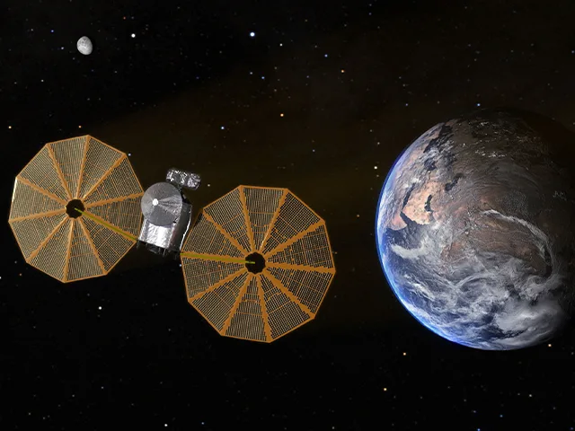

There are many interesting missions that are still happening even though the space race has come to an end. There is always development in the field of astrophysics and spaceship construction. Here are some examples of recent missions and development in our knowledge of space.
The first mission to visit multiple asteroids in a single flight, Lucy studies the early solar system's Trojan asteroids. (8)
The first planetary defense test, DART intentionally collided with an asteroid to test deflection methods for protecting Earth from future asteroid impacts.